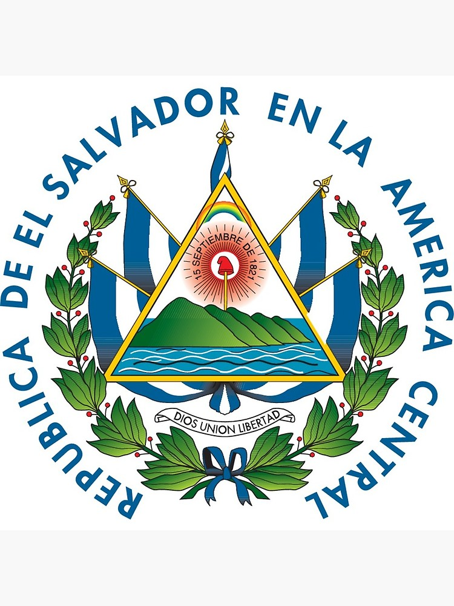
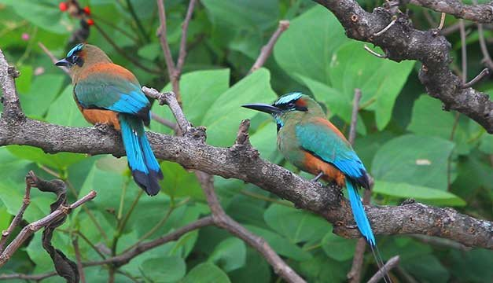
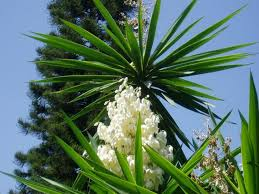
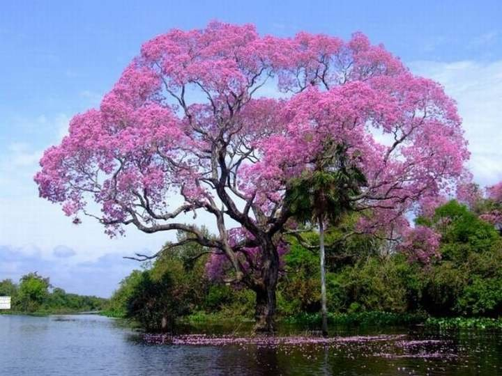
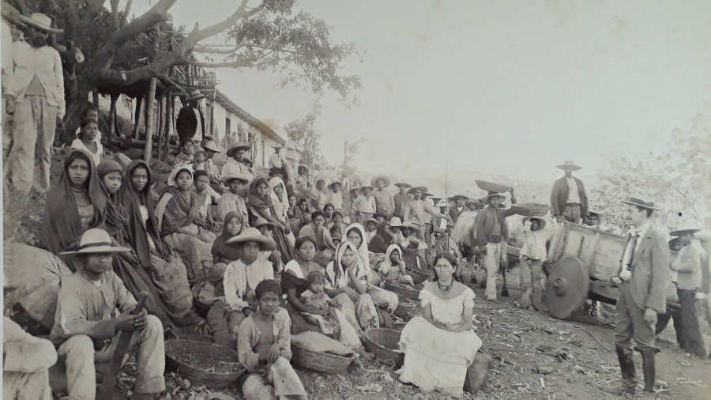
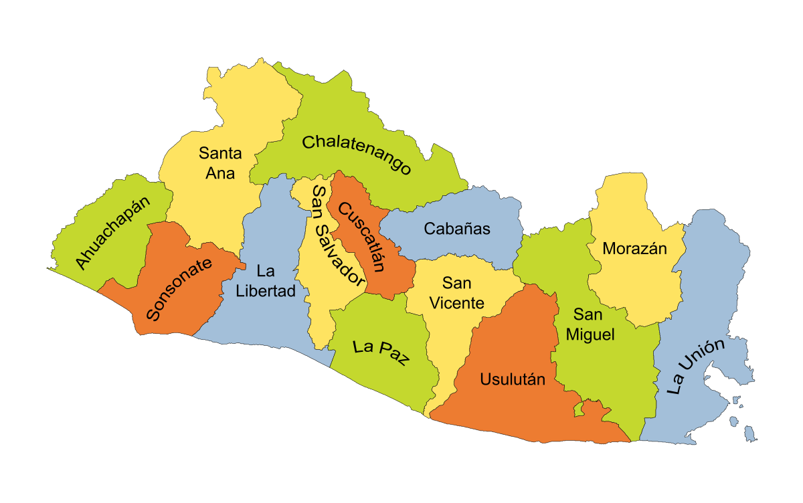
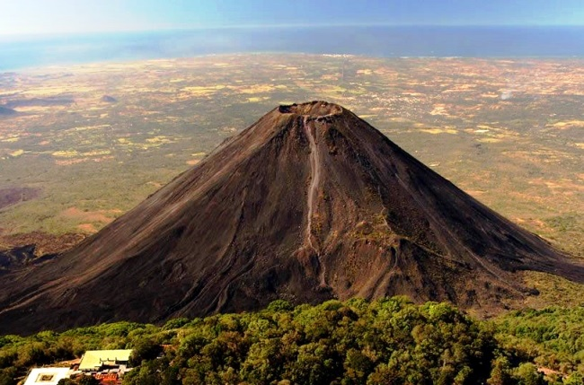
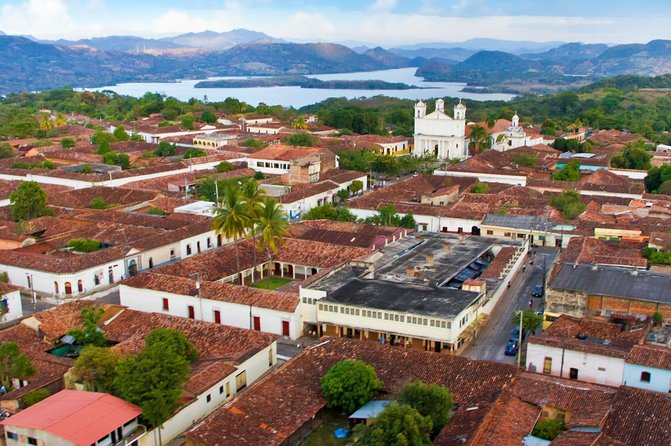

Bandera Actual (1912): La bandera de El Salvador es un paralelogramo de tela compuesto de
tres franjas horizontales: la primera y la tercera azules y la del centro color blanco.
Sus dimensiones oficiales son 3.25 metros de largo por 1.89 de ancho. Cada franja mide 0.63 de ancho.
Puede dársele cualquier dimensión siempre que conserve las mismas dimensiones y colores.

Escudo nacional de El Salvador: El Escudo de El Salvador fue creado junto con la actual Bandera Nacional
por el Decreto Legislativo del 17 de mayo de 1912, siendo Presidente de la República el doctor Manuel Enrique Araujo.
Fue diseñado por el calígrafo salvadoreño Rafael Barraza Rodríguez, que se impuso sobre treinta competidores en un
concurso promovido por el entonces Ministerio de Guerra y Marina, en 1912.

Ave Nacional: El torogoz, también conocido popularmente en algunos lugares como talapo, recibió dicho honor por su singular belleza,
la cual se observa expresada en su plumaje de múltiples y bellos colores.
El Torogoz es un ave que no se puede adaptar al cautiverio, es decir no se puede tener en casa o encerrada,
ésta ave es símbolo de la unidad familiar

Flor Nacional: La flor de Izote fue reconocida oficialmente como “Flor Nacional de El Salvador”, por
la Asamblea Legislativa, el 21 de diciembre de 1995.
Es una planta que florece entre abril y mayo; tiene varios tallos y hojas alargadas, originaria de la región de
Mesoamérica

Árbol Nacional: El árbol Maquilishuat fue declarado “Árbol Nacional de la República”, en 1939,
mediante un decreto ejecutivo, que establecía además, el 22 de junio de cada año como “Día del Árbol Nacional”.
Esta disposición fue ratificada en 1940 por la Asamblea Nacional Legislativa.

Historia de El Salvador: La historia de El Salvador ha pasado por diversos periodos, los cuales han
marcado su actual estado económico, político y social. Antes de la llegada de los conquistadores españoles a tierras
americanas, el territorio se encontró habitado por diversos pueblos originales que ya habían formado órdenes sociales
sofisticadas; con la matanza (genocidio), el sincretismo y el sometimiento toman protagonismo hasta que, la entonces
Provincia de San Salvador, adquirió su independencia del Imperio español, sometido a otro tipo de gobierno de personas
capitalistas, logrando su carácter de Estado en 1824 para formar parte de las Provincias Unidas del Centro de América,
rimero, y de la República Federal de Centro América, después, como una entidad federativa.

Extensión territorial:
El Salvador. República localizada en América Central, con una población de 5.74 millones de habitantes. Debido a su
pequeña extensión territorial (21 041 km²), tiene la densidad poblacional más alta de América continental. Una guerra
civil de 12 años alentada por Estados Unidos
Departamentos:
- Ahuachapán
- Santa Ana
- Sonsonate
- La Libertad
- Chalatenango
- Cuscatlán
- San Salvador
- La Paz
- Cabañas
- San Vicente
- Usulután
- San Miguel
- Morazán
- La Unión

Lugares Turusticos más importantes:
Lago de Coatepeque (Departamento de Santa Ana):
Ubicado en Santa Ana, a 18 kilómetros al sur de la capital del departamento y a 61 kilómetros de San
Salvador, está el Lago Coatepeque, uno de los mejores destinos turísticos del Salvador.Este lago fue
el cráter de un volcán por lo que cuenta con zonas de aguas termales.

Tazumal (Departamento de Santa Ana):
Tazumal es el nombre de un antiguo asentamiento maya con la pirámide más grande de El Salvador.
La zona arqueológica, ubicada en Chalchuapa, a 80 kilómetros de San Salvador, es uno de los sitios
naturales de El Salvador más importantes.
Con 25 metros de altura, el complejo hecho de piedra y barro data del siglo IX

Volcán de Izalco (Departamento de Sonsonate):
Localizado en el Parque Nacional de los Volcanes, en el departamento de Sonsonate, el Volcán de Izalco es
uno de los atractivos naturales del Salvador más populares. El volcán también es conocido por el sobrenombre
del “Faro del Pacífico” porque cuando entró en erupción estuvo unos 80 años expulsando cenizas, las cuales
podían ser vistas por navegantes de los barcos que transitaban por la zona

Suchitoto (Departamento de Cuscatlán):
La ciudad de Suchitoto se ubica a 47 kilómetros de San Salvador, en el departamento de Cuscatlán.
Si planeas unas vacaciones en El Salvador, debes recorrer las pintorescas calles empedradas y con
coloridas fachadas. En Suchitoto podrás disfrutar de festivales de arte, teatro y cine,
de iglesias y plazas.

El Pital (Departamento de Chalatenango):
Viajar por El Salvador implica conocer increíbles espacios naturales y El Pital es el lugar perfecto
para los amantes de los espacios abiertos.
Está ubicado en plena zona fronteriza con Honduras, en Chalatenango, y desde San Salvador deben
recorrerse unos 90 kilómetros. A diferencia del clima cálido que caracteriza a la mayoría de las zonas
del país, en El Pital pueden alcanzarse los 3° centígrados.